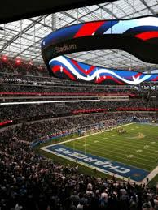

¿Como se juega?
Es un juego de contacto jugado por dos equipos: 11 jugadores ofensivos juegan contra 11 defensivos. El equipo atacante intenta acarrear el ovoide, ya sea, mediante la carrera o mediante el pase hacia la zona de anotación y así marcar puntos.
La defensa tiene que tratar de impedir el avance del equipo rival hacia la anotación. El equipo con el puntaje más alto, después de los 60 minutos de juego, gana el partido.
¿Es peligroso?
El fútbol americano es un deporte de contacto y, por lo tanto, pueden ocurrir lesiones. Los médicos y los científicos están estudiando cómo golpearse la cabeza repetidamente en los bloqueos y los placajes (tacles) afecta al cerebro. Estas lesiones pueden causar problemas cerebrales graves más adelante.
.jpg)
Los cambios que se han hecho recientemente en las normas y las técnicas de entrenamiento pueden ayudar a reducir el riesgo de hacerse lesiones cerebrales.
¿Tiene audiencia?
El mayor partido a nivel de clubes del mundo tiene un promedio de 300 millones de espectadores cada año, cómodamente por encima de los datos del deporte estadounidense. Y es que, mientras en Estados Unidos no hay rival, globalmente la cosa cambia.

Y al fútbol americano aún le queda conquistar a las audiencias de todas las partes del mundo, tal y como ha logrado el fútbol, el deporte rey. De ahí los intentos continuos de la NFL de expandirse. Siguiente paso, Madrid.